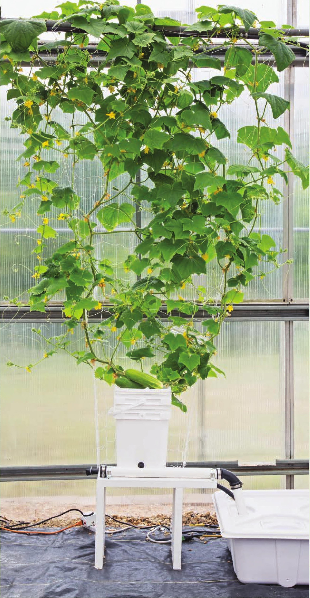

4 GROWING SYSTEM TOP DRIP SYSTEM TOP DRIP IS A HYDROPONIC technique that includes a wide range of garden designs, all with one similar feature: Irrigation lines deliver water to the top of the substrate. Sometimes the irrigation lines are attached to flow rate regulators that create a slow drip, thus top drip. One of the more popular variations of top drip is Dutch buckets. Dutch buckets are closed-bottom pots with a single drainage site. This drainage site is slightly raised from the bottom of the bucket so it can be set up to drain into a collection pipe that directs the used nutrient solution back to the reservoir to be recirculated. • Suitable Locations: Indoors, outdoors, or greenhouse • Size: Medium to large • Growing Media: Perlite or clay pellets • Electrical: Required • Crops: Leafy greens and large flowering crops, including tomatoes, cucumbers, and peppers Top drip systems supply nutrient solutions to the top surface of the substrate. HYDROPONIC GROWING SYSTEMS 83
